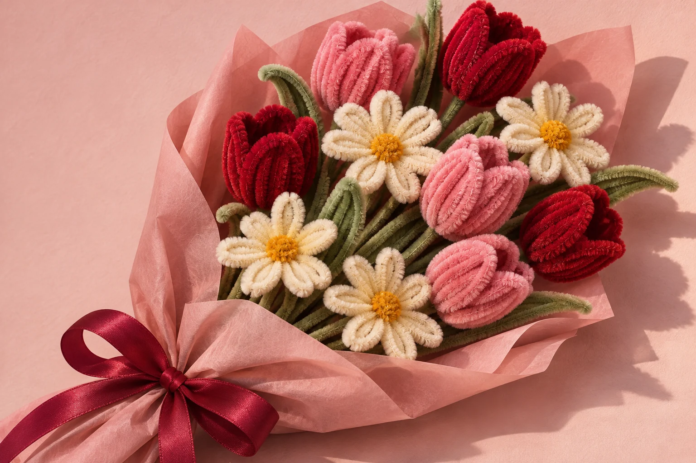
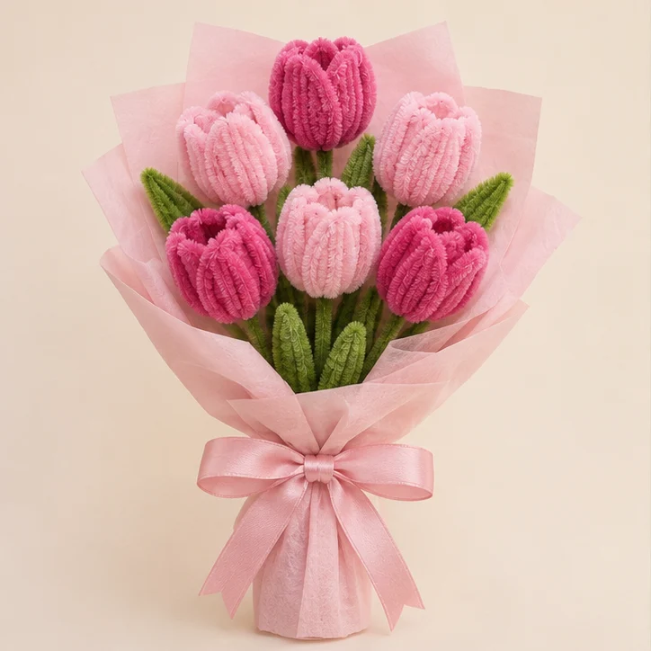

Flores artesanales hechas a mano
Ramos de limpiapipas, hechos flor por flor para acompañar un momento especial.
Un pequeño gesto. Un recuerdo para guardar.

Flores para regalar
Un ramo para esa fecha, ese abrazo o ese día cualquiera.

Un regalo hecho a tu medida
Dinos qué flores, colores y detalles imaginas. El taller revisará tu idea y podrás decidir cómo seguir.
Diseñar mi regalo